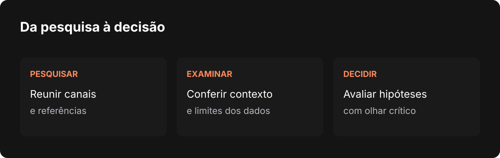

Nardoto
NardotoO Radar de Nichos e a decisão de quem cria
Como estou reunindo pesquisa de canais, análise do próprio canal no YouTube e conhecimento prático no Studio, sem tirar a decisão de quem cria.

Estou chegando perto de um ano construindo o Nardoto Studio e comecei a escrever estes artigos mais recentemente. Quero usá-los para registrar a trajetória do projeto: as ideias que deram certo, as dificuldades que apareceram e as decisões que precisei rever no caminho.
Uma das coisas que mais me ocupam é a pesquisa de canais no YouTube. Antes de produzir um vídeo, muita gente precisa entender o espaço em que está entrando, encontrar referências e olhar para o próprio canal com alguma clareza. Foi pensando nisso que o Radar de Nichos cresceu dentro do Studio.
Mas quero deixar uma coisa clara desde o começo: o Radar é uma ferramenta. Ele ajuda a reunir informações e levantar perguntas. Quem conhece os próprios objetivos e decide o rumo do negócio é a pessoa que está criando.
Por que pesquisar antes de produzir
Quando encontro um canal interessante, quero entender mais do que o número de inscritos. Quero saber o que ele publica, como apresenta os temas, quais vídeos chamaram atenção e se existem outros canais trabalhando com uma proposta parecida.
Um vídeo com muitas visualizações pode ser uma pista, mas um único resultado não conta a história inteira. Pode ter sido publicado em outro momento, por um canal com outro público ou sobre um assunto que funciona de maneira diferente do que parece à primeira vista. Olhar para mais referências ajuda a formular uma hipótese melhor.
O Radar reúne canais em uma base que pode ser explorada por critérios como assunto, idioma e período. A ideia é facilitar o trabalho de encontrar referências e voltar a elas depois. No artigo sobre canais salvos, contei como a organização em pastas ajuda a guardar essa pesquisa entre as telas do Studio e do dashboard.
Uma palavra não explica um canal
Durante o desenvolvimento, encontrei uma limitação importante: alguns filtros dependiam demais da categoria, do nome do canal ou das palavras disponíveis nos títulos. Isso pode ajudar a começar uma busca, mas também leva a confusões. Uma palavra parecida pode aparecer em histórias de ficção, mitologia e conteúdo religioso sem que os canais tratem do mesmo assunto.
Essa situação me levou a perguntar: por que não aproveitar melhor os indícios que o próprio canal oferece? A descrição do canal, os títulos e as descrições dos vídeos, as palavras associadas ao conteúdo e, quando disponível, a transcrição podem ajudar a entender o tema com mais contexto.
O Studio tem caminhos de coleta e classificação que trabalham com essas evidências. Quando uma classificação ainda não está clara, uma leitura adicional pode ajudar. A transcrição, por exemplo, depende de estar disponível e não é lida em todos os casos.
Existe uma diferença técnica que vale registrar. O filtro da base e a leitura mais detalhada de evidências não são a mesma etapa. O filtro trabalha com o que está disponível nos registros consultados; outras rotinas buscam mais informações para classificar canais ou verificar candidatos. Por isso, não seria correto dizer que toda a base é examinada com descrição e transcrição a cada pesquisa. Essa ligação entre as etapas e a qualidade das classificações continuam sendo parte do trabalho.
Buscar fora da base sem chamar todo resultado de descoberta
Outra frente é ampliar a pesquisa quando a base não basta. O Radar pode buscar novos candidatos por assunto e depois verificar informações do canal e dos vídeos. Encontrar um canal na busca é apenas o começo: ele ainda precisa fazer sentido para o tema e para os filtros escolhidos.
A pesquisa também precisa lidar com dados que faltam. Às vezes não há transcrição, a informação de idioma é incerta ou não foi possível examinar um candidato. Nessas situações, prefiro que o Studio mostre a limitação em vez de tratar a ausência de informação como certeza.
Isso exige equilibrar profundidade e tempo de resposta. Ler tudo sobre todos os canais em toda pesquisa não é instantâneo. Os limites de cada rodada significam que o resultado é uma amostra, não um retrato completo do YouTube. Uma pesquisa pode deixar boas referências de fora e também trazer algo que mereça revisão manual.

Olhar para o próprio canal
Pesquisar outros canais ajuda, mas o criador também precisa entender o que acontece no dele. Por isso, estou trabalhando no Coach do Canal, uma área do Studio que parte do canal conectado para reunir informações e apoiar uma análise.
O fluxo em desenvolvimento consulta dados dos vídeos do canal, organiza um diagnóstico e procura referências relacionadas ao tema do vídeo mais recente. Ele também pode gerar um parecer com sugestões para títulos, ideias e próximos passos, usando o conhecimento organizado no Studio e os dados disponíveis naquela análise.
Algumas regras desse diagnóstico usam faixas e testes como referência para levantar hipóteses. Uma hipótese é um ponto de partida, não uma lei do YouTube. Poucas visualizações, por exemplo, não provam sozinhas que o problema está na conta, no nicho ou no título. Há contexto que uma regra não enxerga, e pode faltar informação importante para chegar a uma conclusão.
Também não quero que uma sugestão de IA seja recebida como ordem. A pessoa pode conhecer detalhes do público, da proposta e do próprio trabalho que não aparecem nos dados. Um parecer só é útil quando pode ser questionado.
O conhecimento precisa aparecer junto com os limites
Tenho colocado no Studio conhecimentos e métodos de pesquisa, análise de canais, títulos e planejamento para ajudar a transformar números em perguntas práticas. Na implementação do Coach, esse material é organizado para orientar o parecer, em vez de deixar a análise depender apenas de uma resposta genérica da IA.
O desafio é não transformar esse conhecimento em uma promessa que ele não pode cumprir. Uma regra pode ser útil em um contexto e falhar em outro. Um canal pode ter uma amostra pequena. Uma comparação pode envolver vídeos publicados em momentos muito diferentes. Uma busca pode não encontrar todas as referências.
É por isso que quero manter o pensamento crítico evidente no Studio. Quando um resultado parecer bom demais, vale abrir o canal, assistir aos vídeos, conferir datas, comparar fontes e perguntar se aquela referência realmente serve para o seu público. A ferramenta pode acelerar a investigação; ela não conhece o futuro nem assume a responsabilidade pela decisão.
O que ainda estou construindo
O Radar e o Coach continuam evoluindo. Quero melhorar a descoberta de canais, a leitura das evidências e a apresentação do que foi medido, do que é apenas indício e do que ainda não foi verificado. Também preciso continuar testando essas etapas no aplicativo e confirmar quais delas chegaram às versões distribuídas.
Escrever sobre isso me ajuda a registrar não apenas o resultado, mas o raciocínio e os ajustes feitos no caminho. O Studio existe para ajudar quem cria a trabalhar com mais informação e autonomia. O rumo do canal continua nas mãos de quem está construindo esse negócio.
Escrito por Tharcisio Nardoto, engenheiro civil e criador do Nardoto Studio.